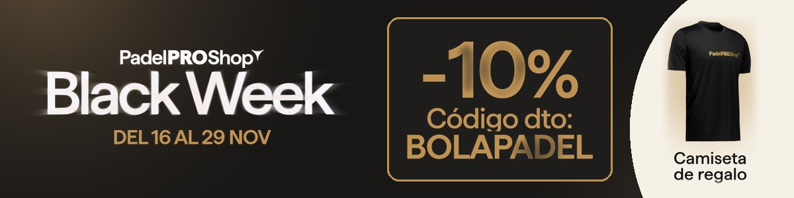

Actualidad · Major de México
Lamperti gana dos partidos en Acapulco y está a uno del cuadro final de su último Premier
Con 48 años y junto a Octavio Álvarez, lleva dos victorias de dos en la previa del Major de México. Esta noche, sobre la 1:00 en España, se juega la entrada al cuadro final.
Por Luis González · · 3 min de lectura

Miguel Lamperti tiene 48 años. Los cumplió el 11 de noviembre.
Y sigue ganando.
En Acapulco, con Octavio Álvarez, lleva dos de dos en la previa del Major de México. Le queda un partido para entrar en el cuadro final.
Es esta noche. Sobre la 1:00 de la madrugada en España, las seis de la tarde en Acapulco.
Enfrente, Aris Patiniotis y Thijs Roper.
El último Premier
No es un torneo más.
Lo anunció en enero, en un vídeo con NOX, su marca de siempre: «Dicen que todo tiene un final». 2026 iba a ser su última temporada.
En octubre puso fecha. Lo contó en el stream Saque y Volea, de El Ciudadano: «Me retiro de Premier, del máximo nivel, en diciembre».
En mayo, en el P1 de Buenos Aires, ya se despidió de su gente.

Después de Acapulco solo quedan las Finals de Barcelona, reservadas a las mejores parejas del año.
Así que este es su último torneo de Premier Padel.
Dos de dos
El sábado, 6-4 y 6-4 a Gayone y Guevara.
El domingo, 6-3 y 6-4 a Thomas Leygue y Jesús Moya, cabezas de serie n.º 4 de la previa. En una hora y 25 minutos.
Moya le había ganado las tres veces que se habían cruzado. La última, en septiembre, en el FIP Platinum de Lyon: Leygue y Moya ganaron a Lamperti y Álvarez en tres sets, después de dos tie-breaks.
A la cuarta, ganó Lamperti.
48 y 22
Octavio Álvarez tiene 22 años. Es de Pergamino y juega en el drive.
Cuando nació, en 2004, Lamperti ya llevaba una década compitiendo.
No es casualidad. Lamperti siempre ha tenido ojo para los jóvenes.
Hace un año, en este mismo torneo, salió de la previa con otro chico de Pergamino: Juani de Pascual. En primera ronda remontaron a Perino y Piotto (1-6, 6-3 y 6-2). Después cayeron con Ruiz y Esbrí, cabezas de serie n.º 12.
Este mes, De Pascual ha jugado con Javi Garrido sus primeras semifinales de Premier, en Dubái.
Lo que viene
Lamperti no se va del todo.
Contó que seguirá jugando los torneos que le gusten, sin mirar el ranking. Que abrirá una academia en Madrid. Que dará exhibiciones y clínics por el mundo. Y que hasta 2028 no se plantea sentarse en un banquillo.
Pero eso es después.
Esta noche queda un partido. Hace un año, Acapulco le abrió la puerta del cuadro final.
Ojalá vuelva a hacerlo.
— Luis González
Publicidad

Publicidad